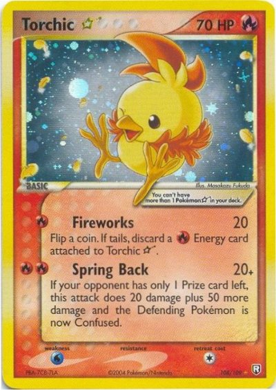
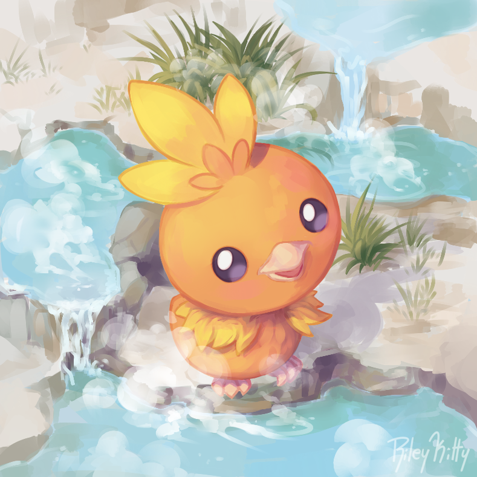
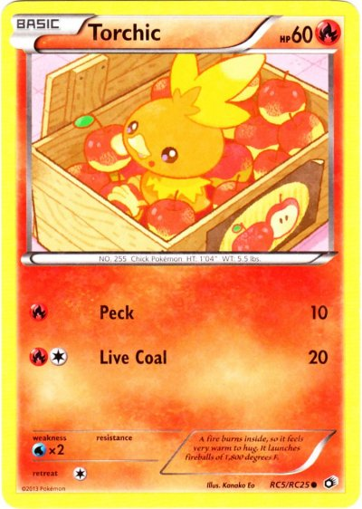
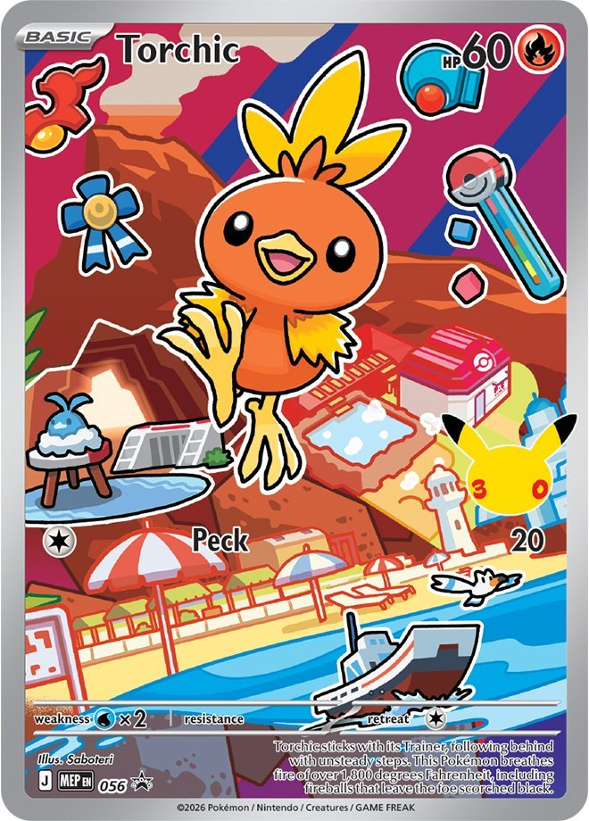

This was the only card I could find that features the shiny form of Torchic. While Combusken and Blaziken have disappointing shinies, Torchic's inverted colors are one of the best shinies in the games.
 BattyCatty Group
BattyCatty Group
Generation 3, more specifically, Pokémon Emerald, was the very first Pokémon game I ever played or owned. Getting the game is a very precious memory for me and I often refer to it as my favorite memory ever. My mother and I were celebrating my 10th birthday. My mother was a single woman and we were very poor growing up. We went to a local Mexican restaurant where we shared the greatest fried ice cream I had ever had. Afterwards we went to Toys-R-Us and went straight to the electronics section. I struggled choosing which of the three latest Pokémon games to choose from. Pokémon Ruby, Pokémon Sapphire, and Pokémon Emerald. Ultimately I chose Pokémon Emerald, because green is my mothers favorite color. That's when I was first introduced to the Pokémon games and more importantly, Torchic! Torchic ended up being my very first starter Pokémon. With Torchic I went countless hours training, playing, and most importantly, beating the game. It was my number one partner and the reason I won my very first Pokémon game.

As of generation 9, Torchic is a Fire type Pokémon. Torchic evolves into Combusken, a Fire/Fighting type, at level 16. Combusken evolves into Blaziken, a Fire/Fighting type, at level 36. Torchic is one of three starter Pokémon from generation 3. Torchic has the following base stats:

This was the only card I could find that features the shiny form of Torchic. While Combusken and Blaziken have disappointing shinies, Torchic's inverted colors are one of the best shinies in the games.

The art of this card is so adorable. Torchic is definitely seen as a cute Pokémon and this card showcases how cute it can be.

There were surprisingly few full art cards to be found of Torchic. I imagine this is because Torchic is not the final stage in its evolution line.